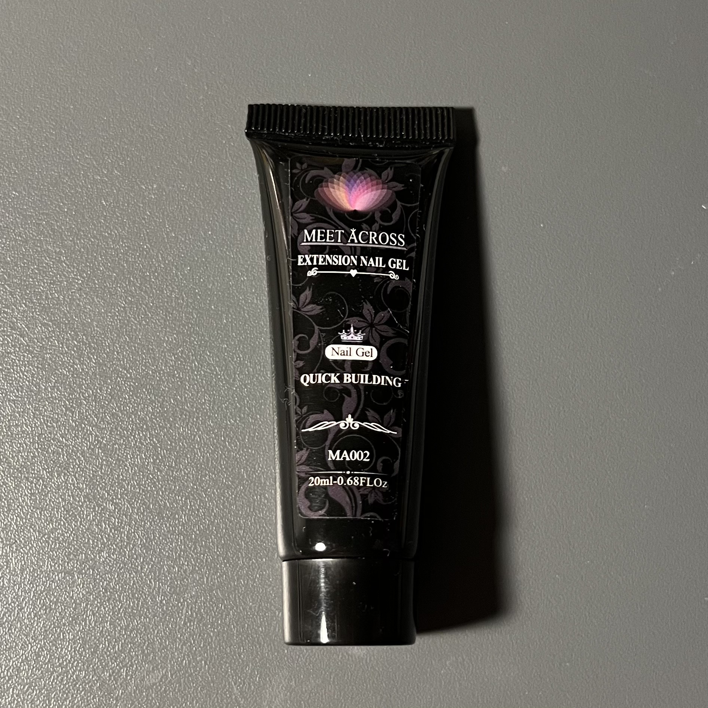

베이스젤
네일 시작 전 1단계로 손톱을 보호 및 강화하는 젤
컬러젤
다양한 색상으로 손톱을 꾸미는 젤
탑젤
네일 마지막 단계에 컬러젤이 쉽게 벗겨지는 것을 막으며 광택을 내는 젤

폴리젤
젤램프에 굳히면 단단해져 손톱처럼 원하는 길이만큼 연장할 수 있는 젤

젤클리너
램프에 젤을 굽고 젤에 남아있는 미경화젤을 닦는 용도
젤램프
원하는 시간만큼 uv 빛을 노출시켜 젤을 굳게 함
슬립 솔루션
폴리젤을 연장용 네일팁에 고르게 분포시킬 때 브러쉬에 붙지않도록 함

연장용 네일팁
폴리젤을 이용해 편하게 손톱 연장을 할 수 있도록 돕는 네일팁
브러쉬
폴리젤을 원하는 모양으로 잡고 분포시키는 브러쉬

알콜 스왑
네일 시작 전 손톱의 유수분을 제거해 유지력을 높임